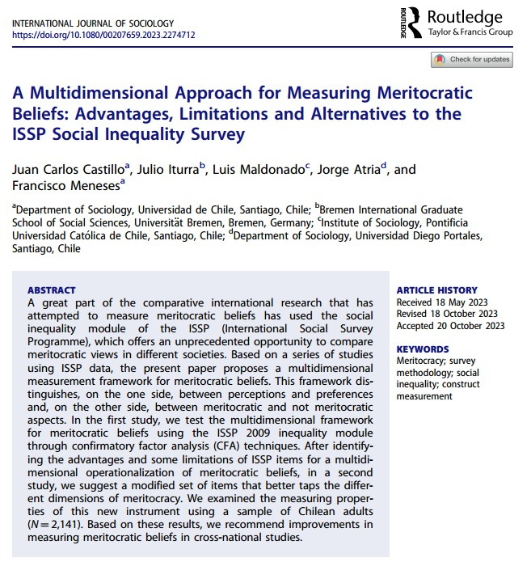

Equipo


Problema de investigación
Contexto y motivación
Meritocracia: sistema distributivo basado en el mérito (esfuerzo + talento) (Young, 1958) → justificación y legitimación de desigualdades (Mijs, 2016; Sandel, 2020)
Agenda de investigación sobre meritocracia
- Dimensión objetiva: movilidad social y la igualdad de oportunidades efectivas (e.g. Goldthorpe, 2003; Van De Werfhorst, 2024)
- Dimensión subjetiva: percepciones, preferencias y actitudes sobre meritocracia y sus efectos (Castillo et al., 2019; García-Sierra, 2023; Mijs, 2019; Newman, 2023)
Meritocracia en contexto escolar: estas creencias a nivel escolar se asocian con una mayor justificación de diversas desigualdades sociales (Batruch et al., 2022; Castillo et al., 2024; Darnon et al., 2018; Wiederkehr et al., 2015)
Medición de meritocracia
Sin embargo, la conceptualización y medición de las creencias meritocráticas en la investigación empírica sigue siendo fragmentada
Investigaciones recientes en meritocracia y educación suelen unidimensionalizar y forzar un continuo entre mérito y no-mérito, mezclando percepciones y preferencias (Liu & Wang, 2025; Reynolds & Xian, 2014; Tang et al., 2025)
Medición de meritocracia

Castillo et al. (2023):
- Proponen un marco conceptual y de medición minimalista para meritocracia en contextos de encuestas
- Distingue entre percepciones vs. preferencias y entre elementos meritocráticos vs. no meritocráticos, usando 2 ítems por factor (trade-off)
Medición de meritocracia
library(knitr)
library(here)here() starts at /home/juank/Dropbox/github/github-organizations/educacion-meritocracia/merit-factorialknitr::include_graphics(path = "images/esquema1.png")
Medición de meritocracia
knitr::include_graphics(path = "images/esquema2.png")
Medición de meritocracia
library(knitr)
library(here)
knitr::include_graphics(path = "images/esquema3.png")
Medición de meritocracia
knitr::include_graphics(path = "images/esquema4.png")Medición de meritocracia
knitr::include_graphics(path = "images/esquema5.png")Este estudio
Objetivo: Describir y medir la meritocracia en estudiantes (percepciones vs. preferencias; mérito vs. no-mérito) y evaluar su comparabilidad.
Aproximación: CFA del modelo 4F + pruebas de invarianza (cohortes/tiempo) + validez convergente con justicia de mercado (salud/educación/pensiones).
Hipótesis:
- \(H1\) (Medición): 4 factores—percepciones/preferencias × mérito/no-mérito.
- \(H2\) (Invarianza cohortes): el modelo 4F es equivalente entre cohortes.
- \(H3\) (Invarianza longitudinal): el modelo 4F es estable entre olas dentro de estudiantes.
- \(H4\) (Validez): justicia de mercado (+) con mérito percibido y preferencias; (–) con no-mérito percibido.